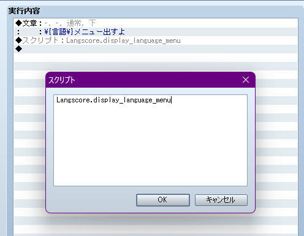
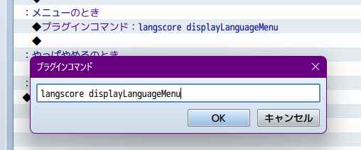
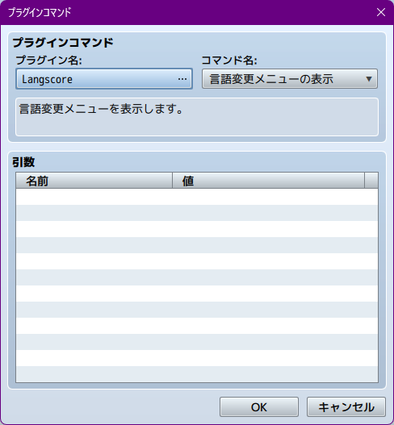
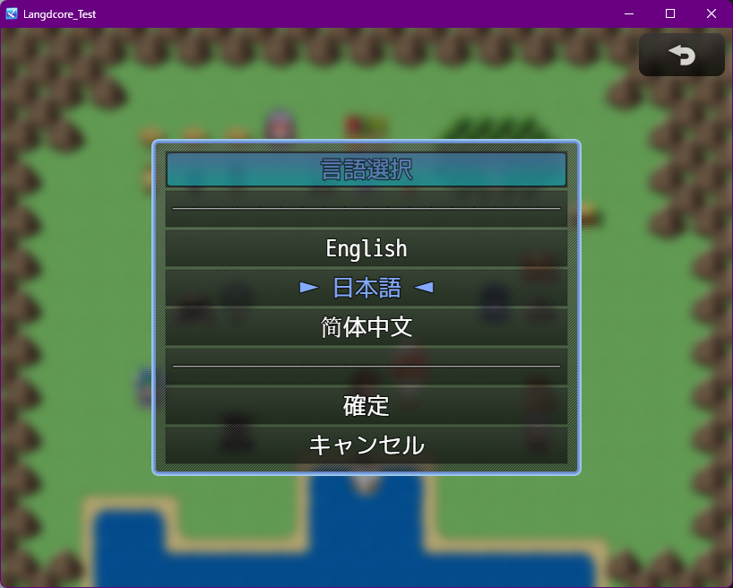

言語選択メニュー¶
言語パッチ機能について の対応に合わせて、プラグイン内で簡易的な言語選択メニューを用意しました。
パッチモードを使用している場合、言語フォルダが見つかったもののみ表示されます。
VXAce¶
スクリプトの呼び出しで Langscore.display_language_menu を呼び出します。
MV¶
プラグインコマンドで langscore displayLanguageMenu を呼び出します。
MZ¶
プラグインコマンドから Langscore | 言語変更メニュー を呼び出します。
